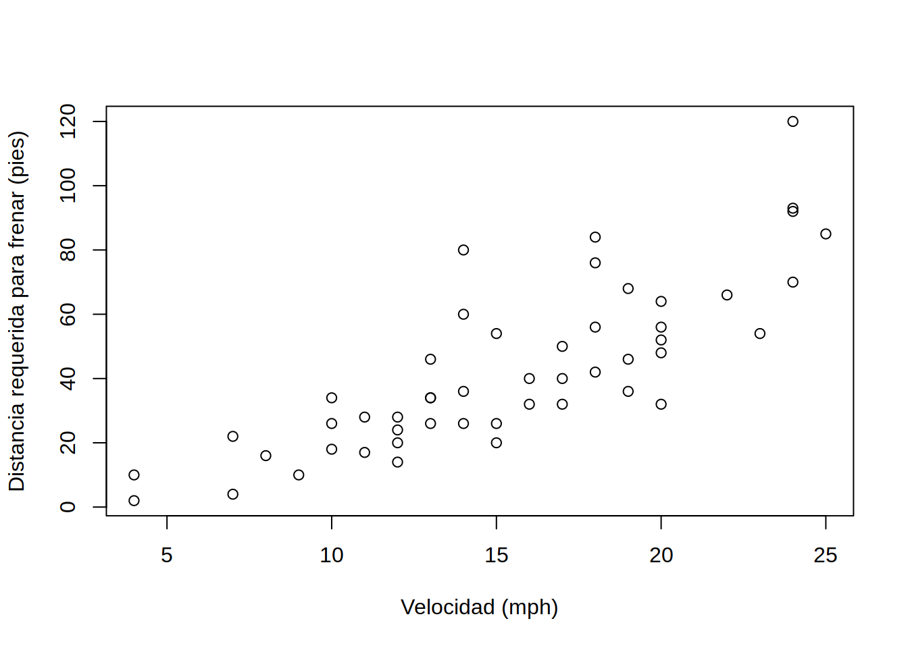

5 R - conceptos básicos
5.1 Trabajo previo
5.1.1 Lecturas
Grolemund, G., & Wickham, H. (2014). Hands-On Programming with R: Write Your Own Functions And Simulations (capítulos 1 - 12). O’Reilly Media. https://rstudio-education.github.io/hopr/
5.2 Resumen
En esta lección, se estudiarán los conceptos básicos del lenguaje de programación R, incluyendo:
- Características generales de R.
- El ambiente de desarrollo RStudio.
- Funciones y paquetes.
- Tipos de datos.
- Definición de funciones.
- Condicionales.
- Ciclos.
5.3 Características generales
R es un lenguaje de programación enfocado en análisis estadístico. Es ampliamente utilizado en diversas áreas de investigación, entre las que pueden mencionarse aprendizaje automático (machine learning), ciencia de datos (data science) y big data, con aplicaciones en campos como biomedicina, bioinformática y finanzas, entre muchos otros. Fue creado por Ross Ihaka y Robert Gentleman en la Universidad de Auckland, Nueva Zelanda, en 1993.
Algunas de las principales características de este lenguaje son:
- Es interpretado: las instrucciones se traducen una por una a lenguaje máquina, a diferencia de los lenguajes compilados, que traducen de manera conjunta las instrucciones de una unidad completa (ej. un programa o una biblioteca). Los lenguajes interpretados tienden a ser más lentos que los compilados, pero también son más flexibles.
- Es multiplataforma: puede ejecutarse en los sistemas operativos más populares (ej. Microsoft Windows, macOS, Linux).
- Tiene un sistema de tipos de datos dinámico: las variables pueden tomar diferentes tipos de datos (ej. textuales, numéricos) durante la ejecución del programa, a diferencia del caso de un sistema de tipos de datos estático, en el que las variables solo pueden tener un tipo de datos.
- Soporta varios paradigmas de programación: los paradigmas son estilos o enfoques teóricos de programación. R soporta los paradigmas de programación funcional, programación orientada a objetos, programación imperativa y programación procedimental.
R es un proyecto de software libre que se comparte mediante una licencia GNU General Public Licence (GNU GPL). Esta característica permite que la funcionalidad original de R pueda ser ampliada mediante bibliotecas o paquetes desarrollados por la comunidad de programadores.
Para programar en R, puede utilizarse una interfaz de línea de comandos, editores de texto (ej. Visual Studio Code, Vim) y también ambientes de desarrollo integrados (IDE, integrated development environment) como Jupyter o RStudio.
5.4 El ambiente de desarrollo integrado RStudio
RStudio es el IDE más popular para el lenguaje R. Está disponible en una versión de escritorio (RStudio Desktop) y en una versión para servidor (RStudio Server). Esta última permite la conexión de varios usuarios a través de un navegador web. RStudio se ofrece también como un servicio en la nube, a través de RStudio Cloud.
La Figure 5.1 muestra la interfaz de RStudio.
Además de edición de código fuente en R (y otros lenguajes), RStudio contiene capacidades para depurar código y visualizar datos en formatos tabulares, gráficos y de mapas.
5.5 Conjuntos de datos para pruebas
Para efectos de pruebas y ejemplos, la distribución base de R incorpora varios conjuntos de datos que pueden listarse con la función data(). Para obtener información acerca de un conjunto de datos en particular, puede utilizarse el operador ?.
# Información sobre todos los conjuntos de datos incorporados en la distribución base de R
data()
# Información sobre el cojunto de datos "cars"
?cars
# Información sobre el cojunto de datos "mtcars"
?mtcars
# Información sobre el cojunto de datos "Iris"
?irisAdemás, existen muchos sitios en Internet que brindan acceso a conjuntos de datos que pueden utilizarse para pruebas. Por ejemplo:
5.6 Funciones
R, al igual que otros lenguajes de programación, estructura su funcionalidad en unidades de código fuente llamadas funciones. Cada función realiza una tarea específica como, por ejemplo, un cálculo matemático y, por lo general, retorna un valor como salida. Todas las funciones tienen un nombre y, opcionalmente, un conjunto de argumentos que especifican los datos de entrada que procesa la función. Los argumentos se escriben entre paréntesis redondos (()) y estos siempre deben incluirse, aún en el caso de que la función no tenga ningún argumento. Si la función tiene varios argumentos, deben separarse mediante comas (,).
5.6.1 Ejemplos
La función print() recibe como argumento un valor (ej. un texto o un número) para imprimirlo en la pantalla. En el siguiente fragmento de código en R, se utiliza print() para imprimir la hilera “Hola mundo”. Nótese el uso del símbolo # para comentarios (i.e. texto que no es código ejecutable).
# Impresión de una hilera de caracteres
print("Hola mundo")[1] "Hola mundo"La función mean() retorna la media aritmética del argumento de entrada. En el siguiente ejemplo, se calcula la media de los números de un vector creado a su vez con la función c().
# Media aritmética
mean(c(2, 4, 5, 9))[1] 5La función getwd() (get working directory) retorna la ruta del directorio de trabajo de la sesión actual de R. Este es el directorio en el cual R espera encontrar, por ejemplo, archivos de datos.
# Impresión del directorio de trabajo
getwd()[1] "/home/mfvargas/pf0953-programacionr/2022-ii/github/2022-ii"La función setwd() (set working directory) establece la ruta del directorio de trabajo de la sesión actual de R. Como argumento, recibe una hilera de texto con la ruta.
Note las barras utilizadas para separar los subdirectorios: / (no \)
# Especificación del directorio de trabajo (la ruta debe existir)
setwd("C:/Users/mfvargas")5.6.2 Ejercicios
- Obtenga la ruta de su directorio de trabajo con la función
getwd().
- Si lo desea, cambie la ruta de su directorio de trabajo con la función
setwd(). Verifique el cambio usando nuevamentegetwd().
5.6.3 Argumentos
Los argumentos de las funciones tienen nombres que pueden especificarse, en caso de ser necesario. En algunos casos, el orden y el tipo de datos de los argumentos permiten que el interpretador de R conozca cuál es cada uno, sin necesidad de escribir sus nombres.
En el siguiente ejemplo, se utilizan los argumentos x, xlab y ylab de la función plot(), para especificar la fuente de datos y las etiquetas de los ejes x e y de un gráfico de dispersión.
# Gráfico de dispersón del conjunto de datos "cars" con etiquetas en los ejes x e y
plot(
x=cars,
xlab="Velocidad (mph)",
ylab="Distancia requerida para frenar (pies)"
)
5.6.4 Ejercicios
- Estudie la documentación de la función
plot()y agregue al gráfico anterior:- Un título.
- Un subtítulo.
5.6.5 Ayuda
Para obtener ayuda sobre una función desde la línea de comandos de R, puede utilizarse un signo de pregunta (?) seguido del nombre de la función o bien la función help(). Por ejemplo:
# Ayuda de la función setwd()
?setwd
help(setwd)También puede utilizarse la función apropos(), para buscar funciones por palabras clave.
# Búsqueda, por palabras clave, de funciones relacionadas con "mean" (media aritmética). Note las comillas ("").
apropos("mean") [1] ".colMeans" ".rowMeans" "colMeans" "kmeans"
[5] "mean" "mean.Date" "mean.default" "mean.difftime"
[9] "mean.POSIXct" "mean.POSIXlt" "rowMeans" "weighted.mean"La función example() presenta ejemplos sobre el uso de una función.
# Ejemplos de uso de la función mean()
example("mean")
mean> x <- c(0:10, 50)
mean> xm <- mean(x)
mean> c(xm, mean(x, trim = 0.10))
[1] 8.75 5.50Por otra parte, el sitio All R Documentation reúne documentación de funciones de una gran cantidad de paquetes de R.
También puede obtenerse ayuda en buscadores de Internet, como Google, o en sitios de preguntas y respuestas para programadores, como Stack Overflow.
5.7 Paquetes
Las funciones de R se distribuyen en paquetes. Cada paquete contiene un conjunto de funciones y estructuras de datos relacionadas entre sí. También hay paquetes que contienen datos.
Para utilizar un paquete, primero debe cargarse (en la memoria del computador) con la función library().
# Carga del paquete stats
library(stats)Algunos paquetes están contenidos en la distribución base de R. Otros deben instalarse con la función install.packages().
En el siguiente ejemplo, se instala el paquete PASWR2, el cual contiene el conjunto de datos TITANIC3 con una lista de pasajeros del Titanic.
# Instalación del paquete PASWR2 (note las comillas)
install.packages("PASWR2")Seguidamente, el paquete PASWR2 se carga con la función library().
# Carga de PASWR2
library(PASWR2)El conjunto de datos TITANIC3 puede visualizarse con la función View().
# Visualización del conjunto de datos TITANIC3
View(TITANIC3)El siguiente gráfico de barras muestra la distribución de pasajeros por clase, mediante la función barplot(). También se utiliza la función table() para generar una tabla con las cantidades de pasajeros que viajaban en cada clase.
# Cantidades de pasajeros por clase
table(TITANIC3$pclass)
##
## 1st 2nd 3rd
## 323 277 709
# Gráfico de barras por clase de pasajero
barplot(
height=table(TITANIC3$pclass),
main="Distribución de pasajeros del Titanic por clase",
xlab = "Clase",
ylab = "Cantidad de pasajeros"
)
La distribución por cada clase puede dividirse en fallecidos y sobrevivientes.
# Cantidades de pasajeros fallecidos y sobrevivientes por clase
# (0 corresponde a fallecidos y 1 a sobrevivientes)
table(TITANIC3$survived, TITANIC3$pclass)
##
## 1st 2nd 3rd
## 0 123 158 528
## 1 200 119 181El siguiente gráfico muestra en un gráfico de barras apiladas la distribución de pasajeros sobrevivientes y fallecidos en cada clase.
# Gráfico de barras apiladas
barplot(
height = table(TITANIC3$survived, TITANIC3$pclass),
main = "Distribución de pasajeros fallecidos y sobrevivientes por clase",
xlab = "Clase",
ylab = "Cantidad de pasajeros",
col = topo.colors(2)
)
# Leyenda
legend(
x = "topleft",
inset = 0.03,
legend = c("Fallecidos", "Sobrevivientes"),
fill = topo.colors(2),
horiz = TRUE
)
La misma información se muestra seguidamente en un gráfico de barras agrupadas. Note el uso del argumento beside.
# Gráfico de barras agrupadas
barplot(
height = table(TITANIC3$survived, TITANIC3$pclass),
main = "Distribución de pasajeros fallecidos y sobrevivientes por clase",
xlab = "Clase",
ylab = "Cantidad de pasajeros",
col = topo.colors(2),
beside = TRUE
)
# Leyenda
legend(
x = "topleft",
inset = 0.03,
legend = c("Fallecidos", "Sobrevivientes"),
fill = topo.colors(2),
horiz = TRUE
)
5.7.1 Ejercicios
- Muestre la distribución de pasajeros fallecidos y sobrevivientes por sexo en un gráfico de barras apiladas.
- Muestre la distribución de pasajeros fallecidos y sobrevivientes por sexo en un gráfico de barras agrupadas.
5.8 Tipos de datos
R puede trabajar con varios tipos de datos básicos, entre los que están números, caracteres (i.e. textos) y lógicos. También puede trabajar con tipos compuestos, como factores y data frames.
R proporciona acceso a los datos a través de objetos. Un objeto es una entidad que tiene asociadas propiedades (i.e. datos) y métodos (i.e. funciones) para manipular esas propiedades. Un objeto puede ser, por ejemplo, un número, una hilera de texto, un vector o una matriz. R también permite que el programador defina sus propios objetos.
Hay muchas formas de crear objetos en R. Una de las más sencillas es con los operadores de asignación. Estos son = y <- (o ->). Por ejemplo, las siguientes sentencias crean un número, un texto y un vector.
# Número
x <- 10
x
## [1] 10
# Otro número
20 -> y
y
## [1] 20
# Hilera de caracteres
nombre <- 'Manuel'
nombre
## [1] "Manuel"
# Vector de hileras de caracteres
dias <- c('Domingo', 'Lunes', 'Martes', 'Miércoles', 'Jueves', 'Viernes', 'Sábado')
dias
## [1] "Domingo" "Lunes" "Martes" "Miércoles" "Jueves" "Viernes"
## [7] "Sábado"Tanto x, como nombre como dias son variables. Una variable es una etiqueta que se le asigna a un objeto. Una variable debe comenzar con una letra.
El tipo de un objeto puede consultarse con la función typeof(). Por ejemplo:
typeof(x)
## [1] "double"
typeof(y)
## [1] "double"
typeof(nombre)
## [1] "character"
typeof(dias)
## [1] "character"A continuación, se describen con más detalle algunos de los tipos de datos utilizados en el lenguaje R.
5.8.1 Tipos básicos
R define seis tipos de datos básicos. En esta sección, se describen los más utilizados durante este curso.
5.8.1.1 Números
Pueden ser enteros (integer) o decimales (double). Se utilizan en diversos tipos de operaciones, incluyendo las aritméticas (ej. suma, resta, multiplicación, división).
# Declaración de variables numéricas
x <- 5
y <- 0.5
# Suma
x + y
## [1] 5.5
# Tipos de datos numéricos
typeof(x)
## [1] "double"
typeof(y)
## [1] "double"
typeof(x + y)
## [1] "double"Nótese que al declararse una variable numérica, ya sea que tenga o no punto decimal, R la considera por defecto de tipo double. Para que se considere de tipo integer, debe utilizarse el sufijo L o la función as.integer().
# Números enteros
x <- 10L
y <- as.integer(15)
# Multiplicación
x * y
## [1] 150
# Tipos de datos enteros
typeof(x)
## [1] "integer"
typeof(y)
## [1] "integer"
typeof(x * y)
## [1] "integer"5.8.1.2 Caracteres
Se utilizan para representar textos. Deben estar entre comillas simples ('') o dobles ("").
# Hileras de caracteres
nombre <- "María"
apellido <- "Pérez"
# Concatenación mediante la función paste()
paste(nombre, apellido)
## [1] "María Pérez"5.8.1.3 Lógicos
Los objetos lógicos (también llamados booleanos) tienen dos posibles valores: verdadero (TRUE) o falso (FALSE).
# Variable lógica
a <- 1 < 2
a
## [1] TRUE
# Variable lógica
b <- 1 > 2
b
## [1] FALSELas expresiones lógicas pueden combinarse con operadores como:
&(Y, en inglés AND)|(O, en inglés OR)!(NO, en inglés NOT)
# Operador lógico AND
(1 < 2) & (3 < 4)
## [1] TRUE
# Operador lógico OR
(2 + 2 == 5) | (20 <= 10)
## [1] FALSE
# Operador lógico NOT
!(2 + 2 == 5)
## [1] TRUE5.8.1.4 Vectores
Un vector es una estructura unidimensional que combina objetos del mismo tipo.
5.8.1.4.1 Definición
Los vectores pueden definirse de varias formas como, por ejemplo, con la función c() (del inglés combine):
# Definición de un vector de números
vector_numeros <- c(1, 7, 32, 45, 57)
vector_numeros
## [1] 1 7 32 45 57
# Definición de un vector de hileras de caracteres
vector_nombres <- c("Álvaro", "Ana", "Berta", "Bernardo")
vector_nombres
## [1] "Álvaro" "Ana" "Berta" "Bernardo"Los vectores también pueden crearse con el operador :, el cual especifica una secuencia (i.e. una lista ordenada):
# Definición de un vector de números con la secuencia de 1 a 10
vector_secuencia <- 1:10
vector_secuencia
## [1] 1 2 3 4 5 6 7 8 9 10
# Definición de un vector de números con la secuencia de -5 a 5
vector_secuencia <- -5:5
vector_secuencia
## [1] -5 -4 -3 -2 -1 0 1 2 3 4 5
# Definición de un vector de números con la secuencia de -0.5 a 3.7
vector_secuencia <- -0.5:3.7
vector_secuencia
## [1] -0.5 0.5 1.5 2.5 3.5La función seq() también crea un vector con base en una secuencia y permite especificar argumentos como un valor de incremento y la longitud de la secuencia.
# Definición de un vector de números en secuencia de 1 a 10
vector_secuencia <- seq(1, 10)
vector_secuencia
## [1] 1 2 3 4 5 6 7 8 9 10
# Definición de un vector de números en secuencia de 0.5 a 15.3, con incremento de 2
vector_secuencia <- seq(from=0.5, to=15.3, by=2)
vector_secuencia
## [1] 0.5 2.5 4.5 6.5 8.5 10.5 12.5 14.5
# Definición de un vector de números en secuencia de 1.5 a 9.4, con longitud de 4
vector_secuencia <- seq(from=1.5, to=9.4, length.out=4)
vector_secuencia
## [1] 1.500000 4.133333 6.766667 9.4000005.8.1.4.2 Indexación
Los elementos de un vector se acceden a través de sus índices (i.e. posiciones). La primera posición corresponde al índice 1, la segunda al índice 2 y así sucesivamente. Los índices se especifican entre paréntesis cuadrados ([]), ya sea para una posición específica o para un rango de posiciones. También es posible especificar los índices que se desea excluir.
# Vector de nombres de países
paises <- c("Argentina", "Francia", "China", "Australia", "México")
paises
## [1] "Argentina" "Francia" "China" "Australia" "México"
# Elemento en el índice 3
paises[3]
## [1] "China"El operador : puede utilizarse para especificar un rango de índices:
# Elementos entre los índices 2 y 4 (2, 3 y 4)
paises[2:4]
## [1] "Francia" "China" "Australia"Con la función c(), es posible especificar un conjunto de índices particulares:
# Elementos entre los índices 1, 4 y 5
paises[c(1, 4, 5)]
## [1] "Argentina" "Australia" "México"Los números negativos pueden usarse para excluir índices:
# Exclusión de los índices 3 y 4
paises[c(-3, -4)]
## [1] "Argentina" "Francia" "México"Los valores lógicos TRUE y FALSE también pueden usarse para incluir y excluir índices de un vector:
# Se incluyen los índices 1, 2 y 4; y se excluyen los índices 3 y 5
paises[c(TRUE, TRUE, FALSE, TRUE, FALSE)]
## [1] "Argentina" "Francia" "Australia"5.8.1.4.3 Operaciones
En los vectores pueden aplicarse operaciones aritméticas:
a <- c(1, 3, 5, 7)
b <- c(2, 4, 6, 8)
# Suma de vectores
a + b
## [1] 3 7 11 15
# Multiplicación de vectores
a * b
## [1] 2 12 30 56Y también pueden realizarse operaciones relacionales:
# Comparación con el operador <
a < b
## [1] TRUE TRUE TRUE TRUE5.8.1.5 Matrices
Una matriz es una estructura bidimensional de filas y columnas.
5.8.1.5.1 Definición
Las matrices se definen mediante la función matrix().
# Definición de una matriz de 3 x 3 con elementos de la secuencia 1:9 distribuidos en las columnas
m <- matrix(1:9, nrow=3, ncol=3)
m
## [,1] [,2] [,3]
## [1,] 1 4 7
## [2,] 2 5 8
## [3,] 3 6 9
# Definición de una matriz de 3 x 3 con elementos de la secuencia 1:9 distribuidos en las filas
m <- matrix(1:9, nrow=3, ncol=3, byrow=TRUE)
m
## [,1] [,2] [,3]
## [1,] 1 2 3
## [2,] 4 5 6
## [3,] 7 8 9
# Definición de una matriz de 3 x 2 con nombres para las filas y las columnas
datos <- c(18, 500, 25, 1000, 30, 2000)
filas <- c("Ana", "Mario", "Laura")
columnas <- c("Edad", "Salario")
m <- matrix(datos, nrow=3, ncol=2, byrow=TRUE, dimnames=list(filas, columnas))
m
## Edad Salario
## Ana 18 500
## Mario 25 1000
## Laura 30 2000La función list() se utiliza, en este caso, para combinar vectores. En general, se usa para combinar datos de cualquier tipo.
5.8.1.5.2 Indexación
La indexación de matrices es similar a la de vectores, pero deben especificarse índices tanto para filas como para columnas.
# Elemento en la posición [2,2] (segunda fila, segunda columna)
m[2, 2]
## [1] 1000
# Elementos de la primera fila
m[1,]
## Edad Salario
## 18 500
# Elementos de la segunda columna
m[, 2]
## Ana Mario Laura
## 500 1000 2000
# Elementos de las filas 1 y 2
m[1:2, ]
## Edad Salario
## Ana 18 500
## Mario 25 1000
# Elementos de la fila "Mario"
m["Mario", ]
## Edad Salario
## 25 1000
# Elementos de la columna "Salario"
m[, "Salario"]
## Ana Mario Laura
## 500 1000 20005.8.1.5.3 Operaciones
De manera similar a los vectores, en las matrices pueden realizarse operaciones aritméticas y relacionales.
a <- matrix(1:4, nrow=2, ncol=2)
a
## [,1] [,2]
## [1,] 1 3
## [2,] 2 4
b <- matrix(5:8, nrow=2, ncol=2)
b
## [,1] [,2]
## [1,] 5 7
## [2,] 6 8
# Suma de matrices
a + b
## [,1] [,2]
## [1,] 6 10
## [2,] 8 12
# Multiplicación de matrices
a * b
## [,1] [,2]
## [1,] 5 21
## [2,] 12 32
# Comparación de matrices con el operador >
a > b
## [,1] [,2]
## [1,] FALSE FALSE
## [2,] FALSE FALSE5.8.2 Tipos compuestos
5.8.2.1 Factores
Los factores se utilizan para representar datos categóricos. Un factor corresponde a un conjunto de categorías correspondientes a un concepto (ej. [“Sí”, “No”], [“Casado”, “Soltero”], [“Alto”, “Medio”, “Bajo”]).
Internamente, los factores se representan en R como números enteros con etiquetas asociadas. A pesar de que los factores parecen (y pueden funcionar como) hileras de caracteres, en realidad son números y debe tenerse cuidado de no manejarlos como caracteres.
Los elementos de un factor se denominan niveles (levels) y, por defecto, se almacenan en orden alfabético.
5.8.2.1.1 Definición
Un factor se crea con la función factor().
# Factor de valores de sexo
sexo <- factor(c("Masculino", "Femenino", "Femenino", "Masculino"))5.8.2.1.2 Operaciones
R proporciona una gran variedad de funciones para manejar factores. Seguidamente, se ejemplifican algunas de estas.
# Etiquetas de los niveles
levels(sexo)
## [1] "Femenino" "Masculino"
# Cantidad de niveles
nlevels(sexo)
## [1] 2
# Conteo de elementos de cada uno de los niveles del factor
table(sexo)
## sexo
## Femenino Masculino
## 2 25.8.2.2 Data Frames
Un data frame es una estructura bidimensional similar a lo que comúnmente se conoce como una tabla. Sus filas corresponden a las observaciones de un conjunto de datos y sus columnas a las variables. Internamente, se componen de varios vectores, factores y/o matrices de la misma longitud. La definición de un data frame puede incluir nombres para cada observación y para cada variable. Los data frames implementan un conjunto de funciones similares a las de una hoja electrónica o una tabla de una base de datos relacional. Son fundamentales para el manejo de datos en R.
5.8.2.2.1 Definición
La función data.frame() crea un data frame a partir de vectores que serán las columnas del data frame.
# Vector de nombres de países
paises <-
c("Panamá",
"Costa Rica",
"Nicaragua",
"El Salvador",
"Honduras",
"Guatemala",
"Belice")
# Vector de cantidades de habitantes de cada país (en millones)
poblaciones <- c(4.1, 5.0, 6.2, 6.4, 9.2, 16.9, 0.3)
# Creación de un data frame a partir de los dos vectores
poblaciones_paises <-
data.frame(
pais = paises,
poblacion = poblaciones
)
# Impresión del data frame
poblaciones_paises
## pais poblacion
## 1 Panamá 4.1
## 2 Costa Rica 5.0
## 3 Nicaragua 6.2
## 4 El Salvador 6.4
## 5 Honduras 9.2
## 6 Guatemala 16.9
## 7 Belice 0.35.8.2.2.2 Indexación
Los datos de un data frame pueden accederse principalmente de dos formas. La primera es mediante la misma sintaxis [fila, columna] que se utiliza en las matrices.
# Fila 1
poblaciones_paises[1, ]
## pais poblacion
## 1 Panamá 4.1
# Filas 1, 5 y 7
poblaciones_paises[c(1, 5, 7), ]
## pais poblacion
## 1 Panamá 4.1
## 5 Honduras 9.2
## 7 Belice 0.3
# Columna 2
poblaciones_paises[, 2]
## [1] 4.1 5.0 6.2 6.4 9.2 16.9 0.3
# Fila 1, columna 2
poblaciones_paises[1, 2]
## [1] 4.1
# Filas 1:4, columna 2
poblaciones_paises[1:4, 2]
## [1] 4.1 5.0 6.2 6.4Además, mediante el operador $, es posible acceder a las columnas (i.e. variables) del data frame.
# Columna de nombres de países
poblaciones_paises$pais
## [1] "Panamá" "Costa Rica" "Nicaragua" "El Salvador" "Honduras"
## [6] "Guatemala" "Belice"
# Modificación de los valores de toda una columna
poblaciones_paises$poblacion = poblaciones_paises$poblacion*2
poblaciones_paises
## pais poblacion
## 1 Panamá 8.2
## 2 Costa Rica 10.0
## 3 Nicaragua 12.4
## 4 El Salvador 12.8
## 5 Honduras 18.4
## 6 Guatemala 33.8
## 7 Belice 0.65.8.2.2.3 Operaciones
R proporciona una gran variedad de funciones para manejar data frames. Las siguientes son algunas de las más utilizadas.
La función read.table() lee los datos contenidos en un archivo de texto y los retorna en un data frame. read.csv() es una función derivada, con valores por defecto orientados a los archivos de valores separados por comas (CSV, Comma Separated Values). Como argumento principal, read.csv() recibe la ruta del archivo CSV, el cual puede encontrarse en un disco local, en la Web o en otra ubicación.
# Lectura de archivo CSV ubicado en la Web
covid <-
read.csv(
"https://raw.githubusercontent.com/pf0953-programacionr/2022-ii/main/datos/cepredenac/covid/covid-20210422.csv"
)
# Despliegue de los datos del data frame
covid
## pais fallecidos recuperados activos positivos
## 1 Panamá 6198 351949 3845 361992
## 2 Costa Rica 3125 199779 32370 235274
## 3 Guatemala 7345 194075 16725 218145
## 4 Honduras 4981 77020 121358 203359
## 5 El Salvador 2089 64208 1864 68161
## 6 Belice 318 12164 114 12596
## 7 Nicaragua 181 5212 57 5450La función str() despliega la estructura de un data frame u otro objeto R.
# Estructura del data frame
str(poblaciones_paises)'data.frame': 7 obs. of 2 variables:
$ pais : chr "Panamá" "Costa Rica" "Nicaragua" "El Salvador" ...
$ poblacion: num 8.2 10 12.4 12.8 18.4 33.8 0.6La función summary() proporciona un resumen de los contenidos de un data frame:
# Resumen de los contenidos del data frame
summary(poblaciones_paises) pais poblacion
Length:7 Min. : 0.60
Class :character 1st Qu.: 9.10
Mode :character Median :12.40
Mean :13.74
3rd Qu.:15.60
Max. :33.80 La función View() invoca un visor de datos que permite visualizar un objeto R en un formato de tabla en una hoja de cálculo. Ejecute en su computadora la siguiente línea de código para apreciar el funcionamiento de View().
# Vista de los casos de COVID-19
View(covid, "Casos de COVID-19 en Centramérica")5.8.2.2.3.1 Ejercicios
- Descargue el archivo de datos de covid de Centroamérica (https://raw.githubusercontent.com/pf0953-programacionr/2022-ii/main/datos/cepredenac/covid/covid-20210422.csv) en su computadora y cárguelo en otro data frame mediante
read.csv(), accediendo a la dirección en su disco (ej. C:/Usuarios/…).
5.8.3 Otros
5.8.3.1 Fechas
Las fechas se manejan en R mediante un tipo especial que permite realizar operaciones como diferencias, agrupamientos y otras. Internamente, una fecha en R se almacena como un número que representa la cantidad de días transcurridos desde el 1 de enero de 1970 (1970-01-01).
5.8.3.1.1 Operaciones
La función Sys.Date() retorna la fecha actual.
# Fecha actual
fecha_actual <- Sys.Date()
fecha_actual
## [1] "2022-10-10"
# Tipo de datos
typeof(fecha_actual)
## [1] "double"
# Clase
class(fecha_actual)
## [1] "Date"La función as.Date() convierte datos entre los tipos fecha y carácter, de acuerdo con un formato. El formato que se usa por defecto (y el recomendado) es el que corresponde a la norma ISO 8601 (ej. 2023-12-03), pero pueden emplearse otros también.
# Conversión de fecha en formato año-mes-día
fecha_caracter_01 <- "2020-01-01"
fecha_01 <- as.Date(fecha_caracter_01, format="%Y-%m-%d")
fecha_01[1] "2020-01-01"# Conversión de fecha en formato día/mes/año
fecha_caracter_02 <- "31/01/2020"
fecha_02 <- as.Date(fecha_caracter_02, format="%d/%m/%Y")
fecha_02[1] "2020-01-31"# Diferencia entre fechas
fecha_02 - fecha_01Time difference of 30 daysHay una lista de formatos de fechas en Date Formats in R - R-bloggers.
5.9 Definición de funciones
Además de todas las funciones disponibles en la distribución base de R y en sus diferentes paquetes, R permite que los programadores definan sus propias funciones.
Toda función tiene tres partes esenciales:
- Un nombre.
- Un conjunto de argumentos.
- Un conjunto de líneas de código, también llamado el cuerpo de la función.
Para programar una función, debe definirse cada una de esas partes por medio de la palabra reservada function function().
Por ejemplo, la siguiente función calcula la nota final de un curso con base en los argumentos correspondientes a los promedios de exámenes, proyectos y tareas.
# Función que calcula la nota final de un curso
nota_final <- function(promedio_examenes,
promedio_proyectos,
promedio_tareas) {
factor_examenes <- promedio_examenes * 0.5
factor_proyectos <- promedio_proyectos * 0.4
factor_tareas <- promedio_tareas * 0.1
return(factor_examenes + factor_proyectos + factor_tareas)
}La función return() es la que define el valor de retorno de la función. Si no se incluye, la función retorna la última expresión evaluada.
Ahora que está definida, la función nota_final() puede ser “llamada”, con diferentes argumentos:
# Si ni se incluyen los nombres de los argumentos,
# la función asume que se ingresan en el mismo orden en el que fueron definidos
nota_final(100, 50, 0)
## [1] 70
# El uso de los nombres de argumentos
# permite modificar su orden
nota_final(promedio_examenes = 100, promedio_tareas = 0, promedio_proyectos = 50)
## [1] 70Si se desea darle al usuario la opción de omitir algunos argumentos, se les puede asignar un valor por defecto.
Seguidamente, la función nota_final() se redefine asignando valores por defecto a algunos de los argumentos:
# Redefinición de la función nota final,
# con valores por defecto para los argumentos
nota_final <- function(promedio_examenes,
promedio_proyectos = 0,
promedio_tareas = 0) {
factor_examenes <- promedio_examenes * 0.5
factor_proyectos <- promedio_proyectos * 0.4
factor_tareas <- promedio_tareas * 0.1
# Al no llamarse a la función return(), se retorna la última expresión:
factor_examenes + factor_proyectos + factor_tareas
}
# Se utiliza el valor por defecto (0) para el argumento promedio_tareas
nota_final(promedio_examenes = 100, promedio_proyectos = 50)
## [1] 70
# Se llama la función usando la posición del primer argumento y el nombre del segundo
nota_final(100, promedio_proyectos = 50)
## [1] 705.9.1 Ejercicios
- Defina una función con nombre
celsius_a_fahrenheit()que reciba como argumento una cantidad en grados Celsius y retorne el equivalente en grados Fahrenheit.
- Defina una función con nombre
fahrenheit_a_celsius()que reciba como argumento una cantidad en grados Fahrenheit y retorne el equivalente en grados Celsius.
- Defina una función con nombre
imc()para calcular el índice de masa corporal (IMC) de una persona con base en su peso (en kilogramos) y su estatura (en metros).
5.10 Condicionales
Las sentencias condicionales evalúan una expresión lógica (i.e. condición) y ejecutan, o no, un bloque de intrucciones dependiendo de si la expresión es verdadera (TRUE) o falsa (FALSE). Permiten que los programas “tomen decisiones” y varíen su curso de acción.
Los condicionales en R se implementa mediante la sentencia if y sus cláusulas else y else if.
5.10.1 La sentencia if
La sentencia if evalúa una condición (i.e. una expresión lógica) y ejecuta un bloque de instrucciones, si es verdadera. El bloque se delimita con los caracteres de “llaves”: {}.
# Sintaxis de la sentencia if
if (condicion) {
# bloque de instrucciones a ejecutar si la condicion es verdadera
}Por ejemplo:
# Edad de una persona
edad <- 25
# Se utiliza la sentencia if para determinar
# si la persona es adulta
if (edad >= 18) {
print("Adulto")
}
## [1] "Adulto"Ya sea que se ejecute o no el bloque del if, el programa continúa con las instrucciones que siguen al bloque, si las hay.
5.10.2 La cláusula else
Una sentencia if puede ir seguida de una cláusula else, la cual define un bloque que se ejecuta si la condición es falsa. Por ejemplo:
edad <- 15
if (edad >= 18) {
print("Adulto")
} else {
print("Menor")
}[1] "Menor"5.10.3 La cláusula else if
Una sentencia if también puede ir seguida de una o varias cláusulas else if, las cuales evalúan condiciones adicionales.
edad <- 70
if (edad < 18) {
print("Menor")
} else if (edad < 65) {
print("Adulto")
} else {
print("Adulto mayor")
}[1] "Adulto mayor"Las cláusulas else if deben escribirse antes de la cláusula else, la cual es siempre la última, si es que está presente. Tanto las cláusulas else if como la cláusula else son opcionales.
5.10.4 Ejercicios
- Defina una función con nombre
interpretacion_imc()que reciba como argumento un número correspondiente al índice de masa corporal (IMC) de una persona. Debe retornar una hilera de caracteres correspondiente a la interpretación del IMC (“Bajo peso”, “Normal”, “Sobrepeso”, “Obesidad”), de acuerdo con la tabla disponible en Índice de masa corporal - Wikipedia.
5.11 Ciclos
Los ciclos permiten ejecutar tareas de manera repetitiva en un programa. Algunos ciclos se ejecutan una cantidad definida de veces, mientras que otros lo hacen mientras se cumple una condición lógica. Pueden usarse en combinación con sentencias que terminan anticipadamente el ciclo o que omiten algunas de sus iteraciones.
Los ciclos en R se implementan mediante las sentencias for, while y repeat, en combinación con las sentencias break y next.
R provee varias funciones que implementan ciclos de manera implícita, tales como apply(), tapply() y lapply(). Adicionalmente, hay muchas operaciones (ej. las aritméticas) que están “vectorizadas”, por lo que no es necesario utilizarlas en ciclos. El uso de código vectorizado es muy recomendado en R, por ser muy eficiente.
5.11.1 La sentencia for
La sentencia for repite las instrucciones contenidas en un bloque para cada uno de los elementos de un vector o lista. En cada iteración (i.e. cada “vuelta” del ciclo), el valor del elemento que está siendo procesado se almacena en una variable.
# Sintaxis de la sentencia for
for (variable in vector) {
# bloque de instrucciones
}Por ejemplo, el siguiente bloque de código utiliza un ciclo de tipo for para recorrer un vector de nombres e imprimir un saludo para cada uno.
# Vector con nombres de personas
vector_nombres <- c("Andrés", "Beatriz", "Carlos", "Marta", "Pedro", "Sara")
# Recorrido del vector
for (nombre in vector_nombres) {
cat("Hola", nombre, "\n")
}
## Hola Andrés
## Hola Beatriz
## Hola Carlos
## Hola Marta
## Hola Pedro
## Hola SaraEn el siguiente ejemplo, se utiliza otro ciclo for para recorrer un vector de números y sumar sus elementos.
# Vector de números
vector_numeros <- c(29.6, -36.81, 31.85, 25.71, 90.2, 0.4)
# Variable para la suma de los números
suma <- 0
# Recorrido del vector
for (x in vector_numeros) {
suma <- suma + x
}
# Impresión de la suma
cat("Suma:", suma)
## Suma: 140.95Seguidamente, se utiliza dos for “anidados” para sumar los elementos de cada una de las columnas de una matriz.
# Matriz de números
matriz_numeros <- matrix(1:12, nrow=3, ncol=4)
matriz_numeros
## [,1] [,2] [,3] [,4]
## [1,] 1 4 7 10
## [2,] 2 5 8 11
## [3,] 3 6 9 12
# Ciclo externo para recorrer las columnas de la matriz
for (j in 1:ncol(matriz_numeros)) {
suma_columna <- 0
# Ciclo interno para recorrer las elementos de cada columna
for (i in 1:nrow(matriz_numeros)) {
suma_columna <- suma_columna + matriz_numeros[i, j]
}
print(suma_columna)
}
## [1] 6
## [1] 15
## [1] 24
## [1] 335.11.1.1 Ejercicios
Utilice un ciclo for para recorrer el vector vector_numeros y calcular el promedio de sus elementos.
Utilice dos ciclos for anidados para recorrer la matriz vector_numeros y calcular el promedio de cada una de sus columnas.
5.11.2 La sentencia while
La sentencia while evalúa una condición (i.e. una expresión lógica) en cada iteración de un ciclo y ejecuta las intrucciones del bloque mientras la condición sea verdadera. Generalmente, en algún momento la condición se vuelve falsa y así finaliza el ciclo.
# Sintaxis de la sentencia while
while (condicion) {
# bloque de instrucciones
}En el siguiente ejemplo, se utiliza un ciclo while para preguntarle al usuario cuál es la respuesta definitiva al sentido de la vida, el universo y todo lo demás y se continúa haciendo la pregunta hasta que responda correctamente:
# Función para leer una respuesta desde la pantalla
leer_respuesta <- function() {
readline(prompt="¿Cual es la respuesta definitiva al sentido de la vida, el universo y todo lo demás? ")
}
# Si la respuesta es incorrecta, se repite la pregunta hasta que el usuario conteste correctamente
while (leer_respuesta() != "42") {
print("¡Su respuesta es incorrecta!")
}5.11.2.1 Ejercicios
Utilice un ciclo while para implementar el cálculo del promedio de los elementos de un vector. Sugerencia: utilice la función length() para obtener la longitud del vector y así saber cuando terminar de recorrerlo.
5.11.3 La sentencia repeat
La sentencia repeat implementa un ciclo que se repite indefinidamente. Puede interrumpirse con una sentencia break.
# Sintaxis de la sentencia repeat
repeat {
# bloque de instrucciones
}Los ciclos repeat tienen una estructura más sencilla que los while. Algo que los diferencia es que los bloques de los ciclos repeat se ejecutan al menos una vez.
En el siguiente ejemplo, se utiliza un ciclo repeat para implementar la pregunta y lectura de la respuesta que anteriormente se implementó con un ciclo while.
# Función para leer una respuesta desde la pantalla
leer_respuesta <- function() {
readline(prompt="¿Cual es la respuesta definitiva al sentido de la vida, el universo y todo lo demás? ")
}
# Ciclo para imprimir la pregunta y leer la respuesta hasta que esta sea correcta
repeat {
respuesta <- leer_respuesta()
if (respuesta != "42") {
# Respuesta incorrecta
print("¡Su respuesta es incorrecta!")
} else {
# Respuesta correcta. Se interrumpe el ciclo.
break
}
}5.11.4 Las sentencias break y next
La sentencia break interrumpe un ciclo. La ejecución del programa continúa con la instrucción siguiente al bloque del ciclo.
En el siguiente ciclo for, se suman uno a uno los números de un vector, pero se usa un break para interrumpir el ciclo cuando el acumulado es mayor que 100.
vector_numeros <- c(17, 23, 37, 41, 52, 64, 75)
acumulado <- 0
for (x in vector_numeros) {
acumulado <- acumulado + x
cat("Acumulado:", acumulado, "\n")
if (acumulado >= 100) {
cat("Se superó el límite de 100 en el acumulado")
break
}
}
## Acumulado: 17
## Acumulado: 40
## Acumulado: 77
## Acumulado: 118
## Se superó el límite de 100 en el acumuladoPor su parte, la sentencia next retorna el control al principio del bloque. Las instrucciones que hay después del next no se ejecutan. La siguiente iteración del ciclo (si la hay), se inicia entonces.
El siguiente ciclo recorre un vector de números. Se utiliza la sentencia next para “saltar” los números impares y sumar solo los pares.
vector_numeros <- c(17, 23, 37, 41, 52, 64, 75)
suma_pares <- 0
for (x in vector_numeros) {
if (x %% 2 == 0) {
# Número par: se suma
suma_pares <- suma_pares + x
} else {
# Número impar: se "salta" al siguiente número
next
}
}
cat("Suma de los números pares:", suma_pares)
## Suma de los números pares: 1165.11.5 La familia de funciones apply()
Esta es una familia de funciones que manipulan subconjuntos de datos obtenidos a partir de matrices, listas y data frames, los cuales son recorridos de una forma repetitiva. Pueden funcionar como una alternativa a los ciclos y aplicar funciones en los subconjuntos de datos como, por ejemplo, funciones estadísticas en las columnas de una matriz o de un data frame. Su uso es muy recomendado por su eficiencia, flexibilidad y simplicidad.
Entre estas funciones, pueden mencionarse apply(), lapply(), sapply(), vapply(), mapply(), rapply() y tapply().
5.11.5.1 La función apply()
La función apply() toma como entrada un arreglo o una matriz y aplica alguna función sobre sus filas o columnas.
La sintaxis de la función es:
# Sintaxis de la función apply()
apply(X, MARGIN, FUN, ...)En donde:
- X: es un arreglo o matriz.
- MARGIN: MARGIN = 1 significa que la función actúa en las filas, MARGIN = 2 significa que la función actúa en las columnas y MARGIN = c(1, 2) significa que la función actúa en las filas y en las columnas.
- FUN: es la función que se aplicará a cada uno de los elementos de X.
En el siguiente ejemplo, se utiliza la función apply() para sumar los elementos de las columnas de una matriz.
m <- matrix(1:12, nrow=3, ncol=4)
m [,1] [,2] [,3] [,4]
[1,] 1 4 7 10
[2,] 2 5 8 11
[3,] 3 6 9 12# Suma de las columnas
apply(m, 2, sum)[1] 6 15 24 335.11.5.1.1 Ejercicios
Utilice la función apply() para obtener el promedio de los elementos de cada columna de la matriz del ejemplo anterior.
5.11.5.2 La función lapply()
La función lapply() toma como entrada un vector o lista y retorna una lista de la misma longitud en la que cada uno de sus elementos es el resultado de aplicar una función al vector o lista de entrada.
La sintaxis de la función es:
# Sintaxis de la función lapply()
lapply(X, FUN, ...)En donde:
- X: es un vector o lista.
- FUN: es la función que se aplicará a cada elemento de X. Algunas funciones predefinidas que pueden utilizarse incluyen mean(), median(), sum(), min() y max(). También pueden usarse funciones definidas por el usuario.
En los siguientes ejemplos, se utiliza lapply() para aplicar diferentes funciones a un vector de nombres de personas.
nombres <- c("Andrés", "Beatriz", "Carlos", "Marta", "Pedro", "Sara")
# Los nombres de la lista se transforman a minúscula
nombres_en_minuscula <- lapply(nombres, tolower)
nombres_en_minuscula[[1]]
[1] "andrés"
[[2]]
[1] "beatriz"
[[3]]
[1] "carlos"
[[4]]
[1] "marta"
[[5]]
[1] "pedro"
[[6]]
[1] "sara"# Se genera un saludo para cada nombre
nombres_con_saludo <- lapply(nombres, function(arg1, arg2) paste(arg1, arg2), arg1="Hola")
nombres_con_saludo[[1]]
[1] "Hola Andrés"
[[2]]
[1] "Hola Beatriz"
[[3]]
[1] "Hola Carlos"
[[4]]
[1] "Hola Marta"
[[5]]
[1] "Hola Pedro"
[[6]]
[1] "Hola Sara"5.11.5.3 La función tapply()
La función tapply() aplica una función a cada nivel de un factor.
La sintaxis de la función es:
# Sintaxis de la función tapply()
tapply(X, INDEX, FUN)En donde:
- X: es un objeto, tipicamente un vector.
- INDEX: es una lista que contiene un factor.
- FUN: es la función que se aplicará a cada elemento de X.
En el siguiente ejemplo, se utiliza tapply() para calcular la mediana del ancho del sépalo para cada especie del conjunto de datos iris.
data(iris)
tapply(iris$Sepal.Width, iris$Species, median) setosa versicolor virginica
3.4 2.8 3.0 5.11.5.3.1 Ejercicios
Utilice la función tapply() para obtener el promedio de las longitudes de los pétalos para cada especie del conjunto de datos iris.
5.11.6 Vectorización
En R, muchas operaciones y funciones pueden ser vectorizadas, lo que significa que pueden aplicarse a los elementos de un vector sin necesidad de iterar uno por uno en estos.
Por ejemplo, considérese el siguiente fragmento de código no vectorizado, que utiliza un ciclo para convertir los números de un vector a sus valores absolutos:
vector_numeros <- c(23, -17, 34, 0, -12, 55)
for (i in 1:length(vector_numeros)) {
if (vector_numeros[i] < 0) {
vector_numeros[i] <- -vector_numeros[i]
}
}
vector_numeros
## [1] 23 17 34 0 12 55El siguiente fragmento de código realiza la misma tarea, pero de forma vectorizada:
vector_numeros <- c(23, -17, 34, 0, -12, 55)
# Se usa una expresión lógica para seleccionar los elementos del vector < 0
negativos <- vector_numeros < 0
negativos
## [1] FALSE TRUE FALSE FALSE TRUE FALSE
# Se cambian los elementos seleccionados en el paso anterior sin utilizar el for
vector_numeros[negativos] <- vector_numeros[negativos] * -1
vector_numeros
## [1] 23 17 34 0 12 555.11.6.1 Ejercicios
Utilice código vectorizado para implementar una función que reciba como argumento un vector de números y retorne el mismo vector con los elementos impares (solo los impares) elevados al cuadrado.
5.12 Recursos de interés
Find Open Datasets and Machine Learning Projects | Kaggle. (s. f.). Recuperado 24 de abril de 2022, de https://www.kaggle.com/datasets
Indicators | Data. (s.f.). Recuperado 11 de septiembre de 2022, de https://data.worldbank.org/indicator
Newest «r» Questions. (s. f.). Stack Overflow. Recuperado 24 de abril de 2022, de https://stackoverflow.com/questions/tagged/r
Papers with Code—Machine Learning Datasets. (s.f.). Recuperado 11 de septiembre de 2022, de https://paperswithcode.com/datasets
R Language Definition. (s. f.). Recuperado 24 de abril de 2022, de https://cran.r-project.org/doc/manuals/r-release/R-lang.html
R Package Documentation. (s.f.). Recuperado 11 de septiembre de 2022, de https://rdrr.io/